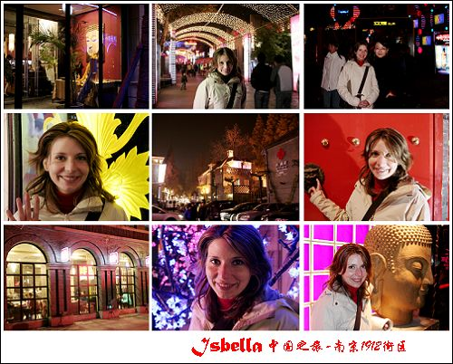

Isbella的中国之旅 @ Dec 04, 2007
试想一下，当我们拿着行李，独自一人踏上完全陌生的土地，且这个地方大多数人不说英语也不说我们的母语，随之耳朵和嘴巴失去功能，这种情形下我们会是什么样的感受？
当我们走进1912街区，那个金发碧眼擦肩而过的高大男孩友好而腼腆地朝我们微笑，在他身上异乡客的孤独感强烈袭来。和那个lonely的男生相比，法国来的ISBELLA状况算是不错的。至少旅行计划中的某几个城市有人接待。很难体会和想象当周围有些人百般炫耀并得意于自己手上拥有的那点物质，而一些外国人却辞去工作，有的甚至辞去相当不错的工作独自一人旅行的生活，虽然她的旅行不过短短一个月。他们是不是只想着眼前，只考虑现在的需要？大多数中国人求稳求收入，感受和需要却在其次，如果我们的政府能提供更好的社会福利，安全感也许会饱满许多？
当有人来访时我会对南京的白天和黑夜失望，实在没什么可推荐的。生活其中却有小滋味，游客们自然是体会不到，所以不要到南京来旅游。夜晚对于初来乍道的客人除了1912这个表情千变百态的浑浊之地，似乎没有别的地方可去了？这座城市标志性的夜生活仅于此，止于此。

13 Responses to “Isbella的中国之旅”
2007-12-04
“这个地方大多数人不说英语也不说我们的母语，随之耳朵和嘴巴失去功能，这种情形下我们会是什么样的感受？”
——这话感受深刻。
在西班牙某公路餐馆吃饭，对着傻嘻嘻的服务生说“hot water”、”eau chaude“，嘴+手势轮番轰炸=白搭。感谢当时还有个会英文的西班牙食客，”aqua”,老兄总算递上热水一杯
2007-12-05
其实也没那么可怕，多出去走走就习惯了，难道比移民出国定居还难吗？出去玩总是很开心的事情，买本旅游手册就可以走世界了。
2007-12-05
呵呵
刚好写了一篇在路上
你这里就有另一种在路上
其实行走的状态有外向有内心
当然
要是能行万里路 读万卷书当然是最写意的一生
2007-12-05
鬼佬对中国的历史古迹最感兴趣，南京还是有很多的。
2007-12-05
赞同EDWARD！看看古建筑啊！
2007-12-05
古建筑不够多~中山陵、夫子庙、玄武湖都去了，还爬了紫金山。强烈推荐去丽江、大理那边。
2007-12-05
呵呵，我今年春节的旅游目标就是去丽江、大理。反正过年都要回成都顺便溜到那边去看看。Christina既然强烈推荐那一定值得去看看哦。
2007-12-05
why i feel lijiang is totally overrated…i was so disappointed from my last trip to lijiang n shangrila. sad!
2007-12-05
丽江、香格里拉、阳朔是我去过最好的地方。
2007-12-06
我没去过什么地方，
但是我想周游世界...
2007-12-06
别太悲观:) 想想晨雾中的北极、台城，正午的紫霞湖畔，中山青年旅舍小憩，夕阳紫金山道，夜幕秦淮灯影。。。
还有琅琊醉翁流水，痩西湖里荡舟。。。
其实傍晚夕阳驾车周游紫金山峦也别有意境
鬼子要看的多以文化底蕴为主，不怕罚款的话，明故宫烧烤极佳
2007-12-06
另外，鬼子对地方小吃也有兴趣，但他们常吃cheer，煎炸食物，味蕾和素食华人不同:) 可考虑秦淮人家或大排挡系列套餐，尹氏汤包(湖南路商场33中门口)，刘长兴鸡汁干丝。。
2007-12-08
I would recommand Isbella to visit those places if she hasn’t yet.
甘家大院; http://i228.photobucket.com/albums/ee171/chenga_bucket/SD530277.jpg
宝船厂遗址;
http://i228.photobucket.com/albums/ee171/chenga_bucket/zhanghalship.jpg
and here;
http://i228.photobucket.com/albums/ee171/chenga_bucket/LookOutLou.jpg
Leave A Reply
存档只读，评论已关闭。